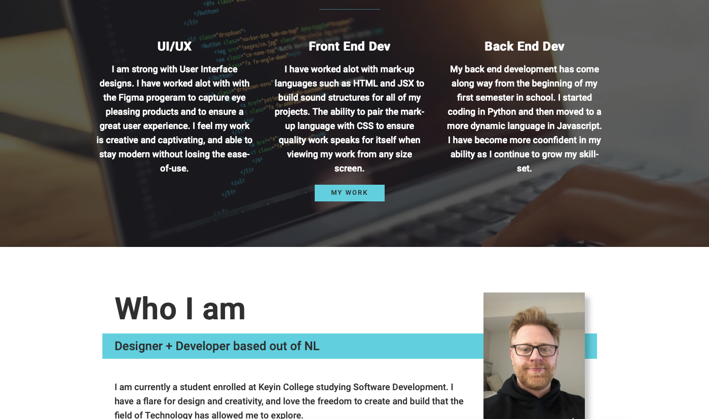

A peek at my background

My living portfolio was inspired by some really great developers and CSS enthusiasts. The front end flare is really a passion of mine. With the design and user experience at the top of my list when attacking any project, I feel like my portfolio is a nod to that interest.
A little write-up of my abiliities. I feel like it is an honest reflection of my abiliities as a designer + developer and I believe the future has much more in store for me to continue to learn and develop.